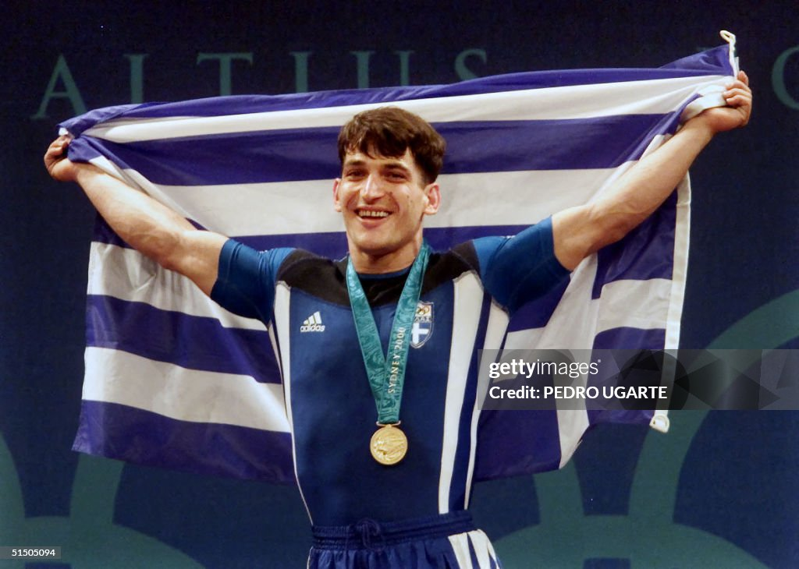
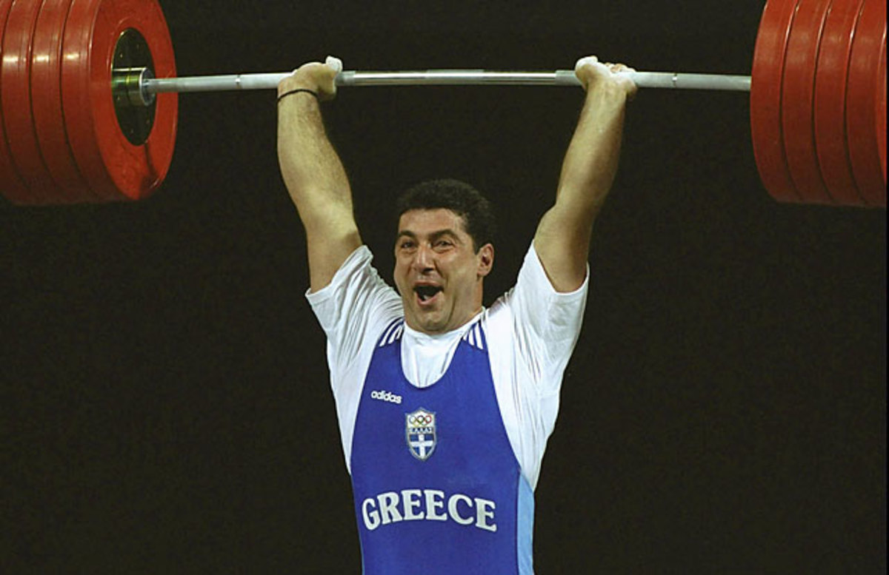
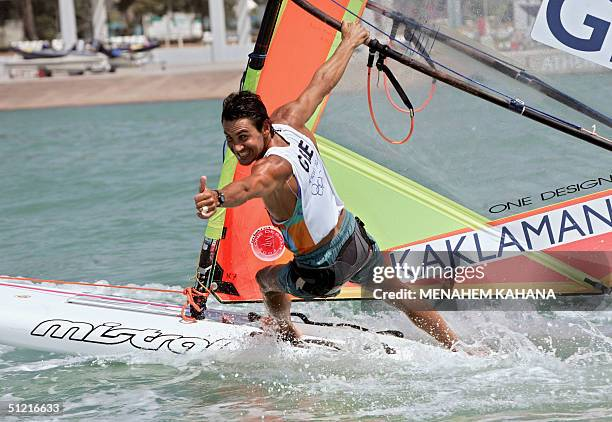

🇬🇷 1992 · 1996 · 2000Yunanistan'ın tüm zamanların en büyük olimpik sporcusu. Üç altın, bir bronz madalyayla halter tarihine adını yazdırdı. 1996 Atlanta'da hem snatch hem jerk dünya rekoru kırdı. 2004 Atina'da sakatlanmış hâlde bronz alarak platformdan ayakkabılarını çıkarıp bıraktı — emekliliğinin sembolü oldu.

🇬🇷 1992·1996·2000Yunanistan adına yarışan en büyük olimpik haltercilerden biri. Üç Olimpiyat altını kazanarak halter tarihine girdi.Gürcistan doğumlu olmasına rağmen kariyerinin en büyük başarılarını Yunanistan adına kazandı ve uzun yıllar Yunan sporunun efsanelerinden biri sayıldı.

🇬🇷 Atlanta 19965 olimpiyata katılan efsanevi Yunan yelkenci. 1996 Atlanta'da Mistral sınıfında altın madalya kazandı. 2004 Atina Olimpiyatları açılış töreninde meşaleyi denizden taşıyıp olimpiyat ateşini tutuşturan kişi olarak olimpiyat tarihine geçti.
 🇬🇷
Atina 2004
🇬🇷
Atina 2004
108 yıl sonra olimpiyatlar Yunanistan'a döndü. 201 ülke, 10.625 sporcu, 28 spor dalı. Yunanistan tarihinin en başarılı olimpiyatı: 16 madalya. "Welcome Home" temasıyla düzenlenen efsanevi açılış töreni, tarihin en büyük olimpiyat gösterilerinden biri sayılır.